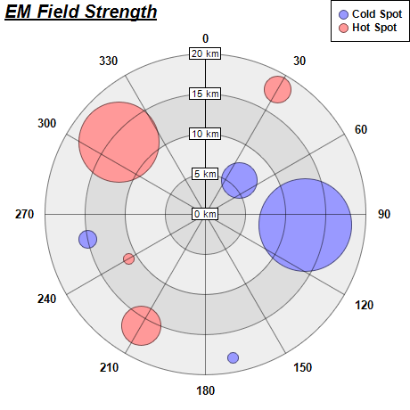

This example demonstrates how to create polar bubble charts. It also demonstrates using alternating background colors along the radial direction.
A polar bubble chart can be created as a polar line chart with circles as data symbols. The line width is set to 0, so only the symbols can be seen. The symbol sizes are then controlled using another data series. This will create the effects of a bubble chart.
The detail steps are:
Note that in this example, the polar plot area uses two alternating background colors along the radial direction. This is by using
PolarChart.setPlotAreaBg.
The following is the command line version of the code in "cppdemo/polarbubble". The MFC version of the code is in "mfcdemo/mfcdemo". The Qt Widgets version of the code is in "qtdemo/qtdemo". The QML/Qt Quick version of the code is in "qmldemo/qmldemo".
#include "chartdir.h"
int main(int argc, char *argv[])
{
// The data for the chart
double data0[] = {6, 12.5, 18.2, 15};
const int data0_size = (int)(sizeof(data0)/sizeof(*data0));
double angles0[] = {45, 96, 169, 258};
const int angles0_size = (int)(sizeof(angles0)/sizeof(*angles0));
double size0[] = {41, 105, 12, 20};
const int size0_size = (int)(sizeof(size0)/sizeof(*size0));
double data1[] = {18, 16, 11, 14};
const int data1_size = (int)(sizeof(data1)/sizeof(*data1));
double angles1[] = {30, 210, 240, 310};
const int angles1_size = (int)(sizeof(angles1)/sizeof(*angles1));
double size1[] = {30, 45, 12, 90};
const int size1_size = (int)(sizeof(size1)/sizeof(*size1));
// Create a PolarChart object of size 460 x 460 pixels
PolarChart* c = new PolarChart(460, 460);
// Add a title to the chart at the top left corner using 15pt Arial Bold Italic font
c->addTitle(Chart::TopLeft, "<*underline=2*>EM Field Strength", "Arial Bold Italic", 15);
// Set center of plot area at (230, 240) with radius 180 pixels
c->setPlotArea(230, 240, 180);
// Use alternative light grey/dark grey circular background color
c->setPlotAreaBg(0xdddddd, 0xeeeeee);
// Set the grid style to circular grid
c->setGridStyle(false);
// Add a legend box at the top right corner of the chart using 9pt Arial Bold font
c->addLegend(459, 0, true, "Arial Bold", 9)->setAlignment(Chart::TopRight);
// Set angular axis as 0 - 360, with a spoke every 30 units
c->angularAxis()->setLinearScale(0, 360, 30);
// Set the radial axis label format
c->radialAxis()->setLabelFormat("{value} km");
// Add a blue (0x9999ff) line layer to the chart using (data0, angle0)
PolarLineLayer* layer0 = c->addLineLayer(DoubleArray(data0, data0_size), 0x9999ff, "Cold Spot");
layer0->setAngles(DoubleArray(angles0, angles0_size));
// Disable the line by setting its width to 0, so only the symbols are visible
layer0->setLineWidth(0);
// Use a circular data point symbol
layer0->setDataSymbol(Chart::CircleSymbol, 11);
// Modulate the symbol size by size0 to produce a bubble chart effect
layer0->setSymbolScale(DoubleArray(size0, size0_size));
// Add a red (0xff9999) line layer to the chart using (data1, angle1)
PolarLineLayer* layer1 = c->addLineLayer(DoubleArray(data1, data1_size), 0xff9999, "Hot Spot");
layer1->setAngles(DoubleArray(angles1, angles1_size));
// Disable the line by setting its width to 0, so only the symbols are visible
layer1->setLineWidth(0);
// Use a circular data point symbol
layer1->setDataSymbol(Chart::CircleSymbol, 11);
// Modulate the symbol size by size1 to produce a bubble chart effect
layer1->setSymbolScale(DoubleArray(size1, size1_size));
// Output the chart
c->makeChart("polarbubble.png");
//free up resources
delete c;
return 0;
}
© 2023 Advanced Software Engineering Limited. All rights reserved.